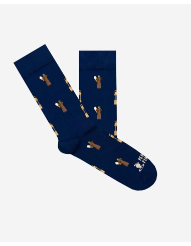
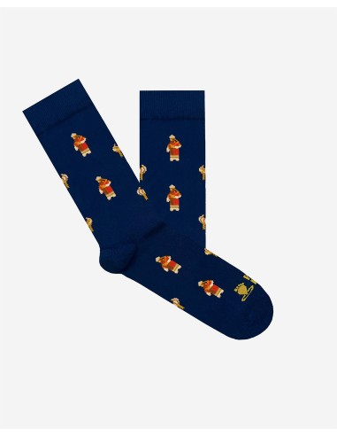
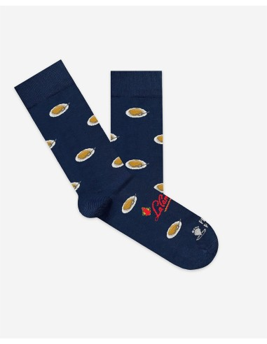

La Sentencia
Calcetines de la colección Semana Santa dedicados a La Sentencia.
Ver ficha oficial ↗DISEÑOS CON ACENTO PROPIO
Una selección de diseños reales y un organizador de regalos que separa referencias y cantidades.

Tres referencias reales. Las opciones, precios y existencias se confirman en la tienda oficial.
Calcetines de la colección Semana Santa dedicados a La Sentencia.
Ver ficha oficial ↗
Diseño de calcetines de San Gonzalo; consulta la talla de la variante oficial.
Ver ficha oficial ↗
Calcetines con diseño de torrijas de la Confitería La Campana de Sevilla.
Ver ficha oficial ↗TU LISTA LOCAL
Tu selección queda en este navegador. No reserva productos ni envía pedidos.
La tienda organiza calcetines por temas como ciudades, gastronomía y tradiciones.
Hay rutas diferenciadas para adultos y niños.
Cada diseño tiene una ficha propia; tallas y disponibilidad se comprueban allí.